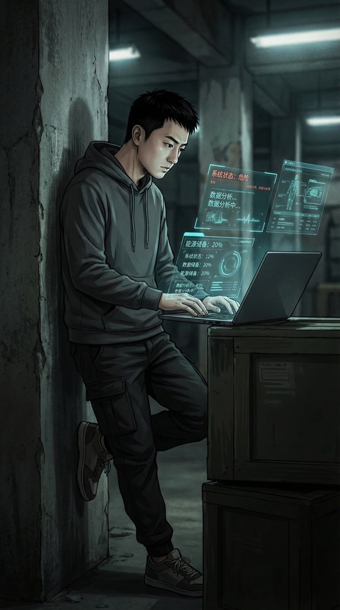
深夜的分拣中心只有应急灯的青白色光。我靠墙盯着小陈的屏幕，系统鉴定信息悬浮在视频截图上。
上辈子融资谈判前起码喝杯咖啡。现在自来水都是奢侈品。
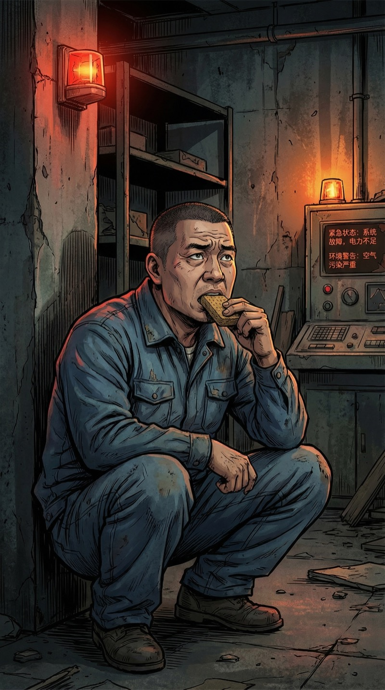
老赵蹲角落嚼最后一块压缩饼干，咯嘣声回荡在空旷仓库里。
朱总，那帮人到底救不救？饼干只剩这一块了。
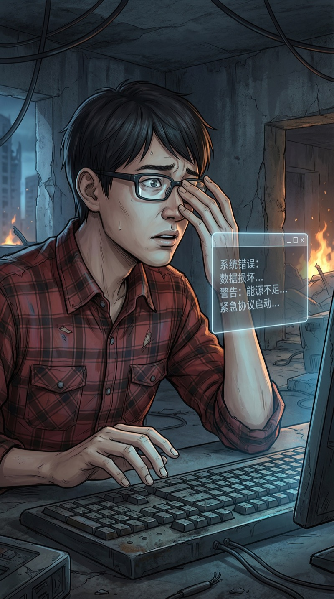
小陈推了推眼镜，手指悬在键盘上。
他们三个军人……万一是陷阱？
📋 提示：您的CTO正在恐慌中。建议：给他一块饼干。安抚成本：0.33块。
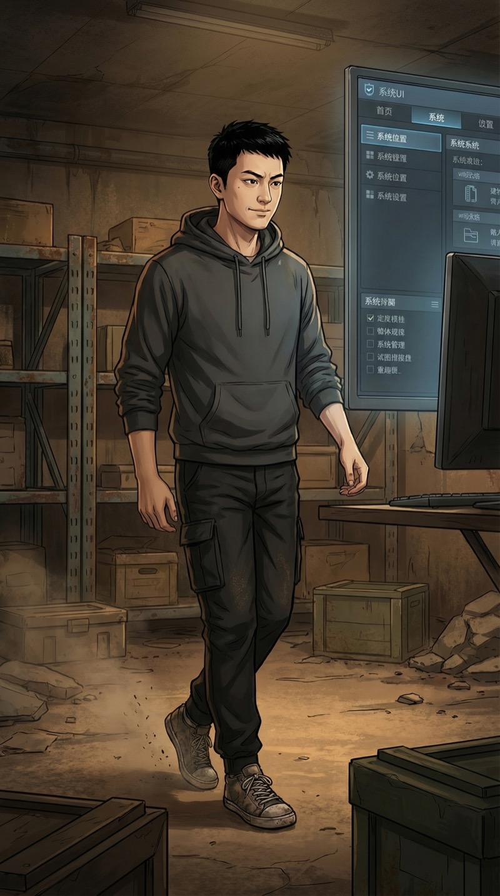
我站起来拍了拍灰，走向屏幕。
做生意第一课——信息差就是利润。咱们知道他们有军人，他们不知道咱们知道。这叫什么？
……啥？
这叫尽职调查已完成，对方还没开始。
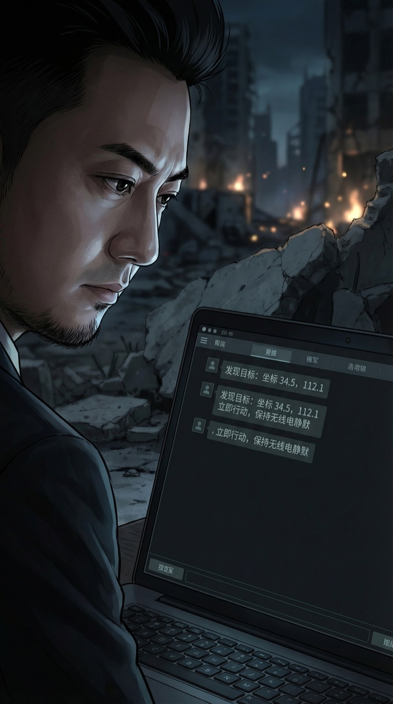
局域网聊天界面弹出消息——方队的风格像战报一样简洁。
方卫国。前武警。30人。12老弱。需食物药品。可提供安保。完毕。
一条消息都像战报。比投资人的商业计划书简洁一万倍。
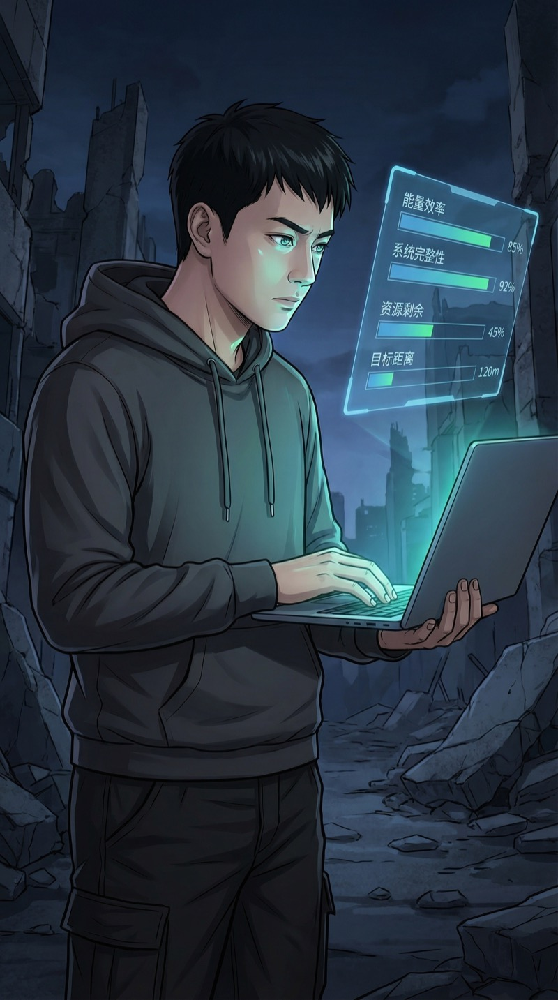
我打字的同时，真正注意力在系统——它正在分析消息语言模式。
🔍 诚实度82% | 隐藏信息：未提及武器储备数量 | 情绪特征：焦虑但克制
82%诚实。比融资时投资人给我的数据靠谱。
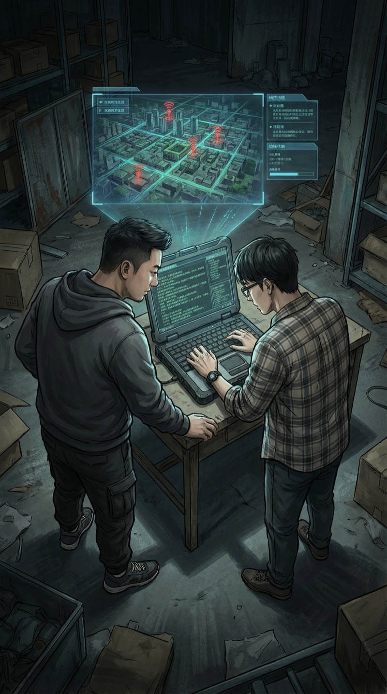
我让小陈定位信号源。他飞速敲键盘。
城南CBD地下停车场，误差200米。
📡 信号特征：单基站低功率。非伪装。结论：技术能力有限，求救为真。
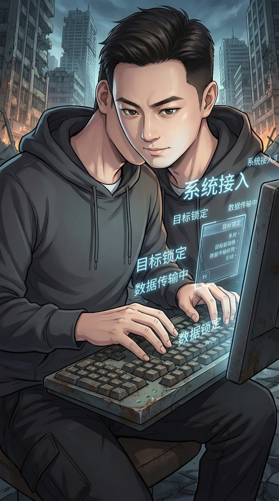
我回复。
我方可提供通讯网络+物资调度能力。条件：互通情报，共建周边10公里联络网。
创业谈判铁律——永远不说「我要什么」，先说「我能给你什么」。
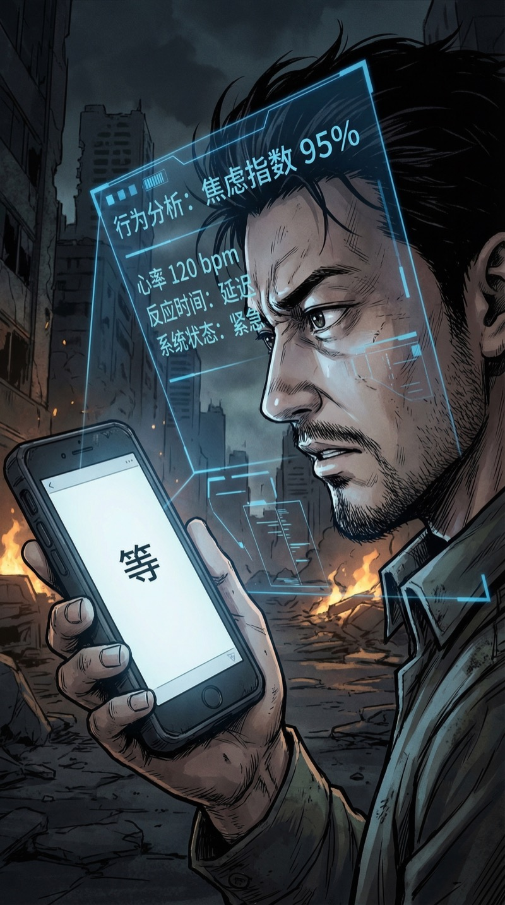
方队沉默了整整三分钟。然后回了一个字。
详。
🧠 对方进入评估模式。三分钟沉默=内部讨论。「详」字=感兴趣但不信任。谈判窗口已打开。
三分钟。投资人收到BP后三天不回才正常。军人效率真高。
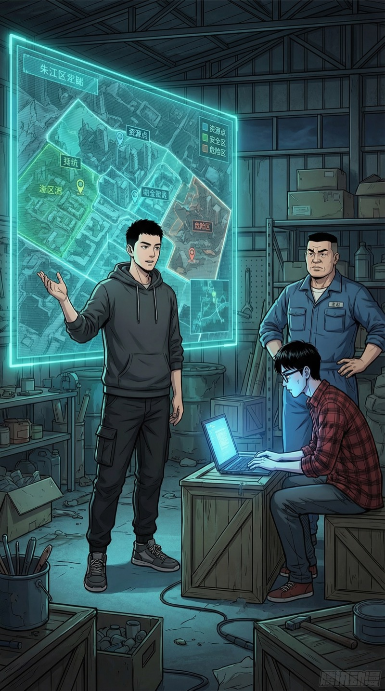
我开始系统性地展示能力。让小陈演示局域网——发送了一张标注了方队据点周边500米内物资分布的地图。
没有PPT，那就用实力演示。这叫product demo。
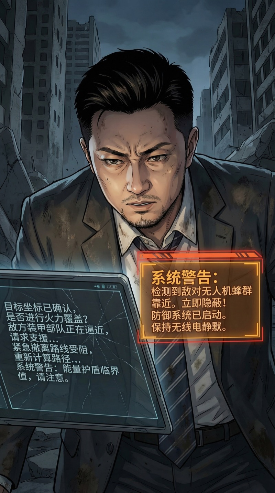
方队的回复变长了。
地图精确度？信息来源？你们几个人？
⚠️ 警告：对方正在评估您的军事威胁等级。建议：展示价值但隐藏人数弱点。
问「你们几个人」——这不是关心，是在评估打不打得过我。好，军人思维。
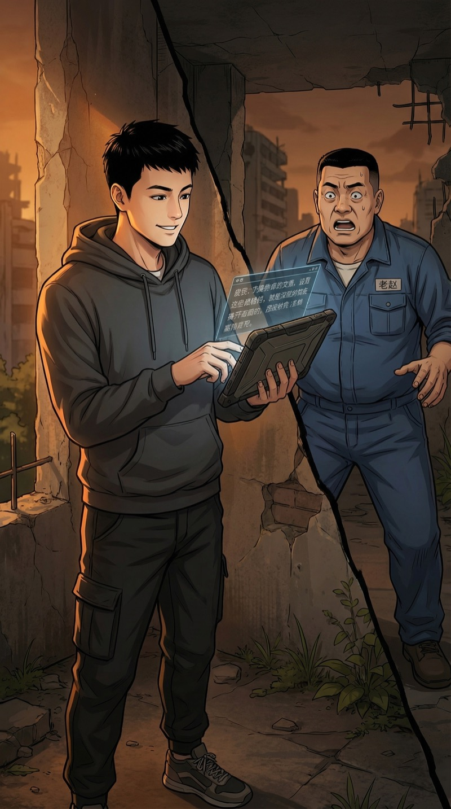
精确度90%以上。人数目前不方便透露。但我可以告诉你一件事——你们东北方向800米处有一个废弃药店，二楼仓库没被搜过。里面有退烧药和抗生素，够你们撑半个月。这是见面礼。
老赵瞪大眼。
朱总！咱自己还没去拿呢你就告诉他们了？！
赵哥，免费样品是最好的销售手段。
💹 交易技巧+5。请继续保持这种慷慨……的算计。
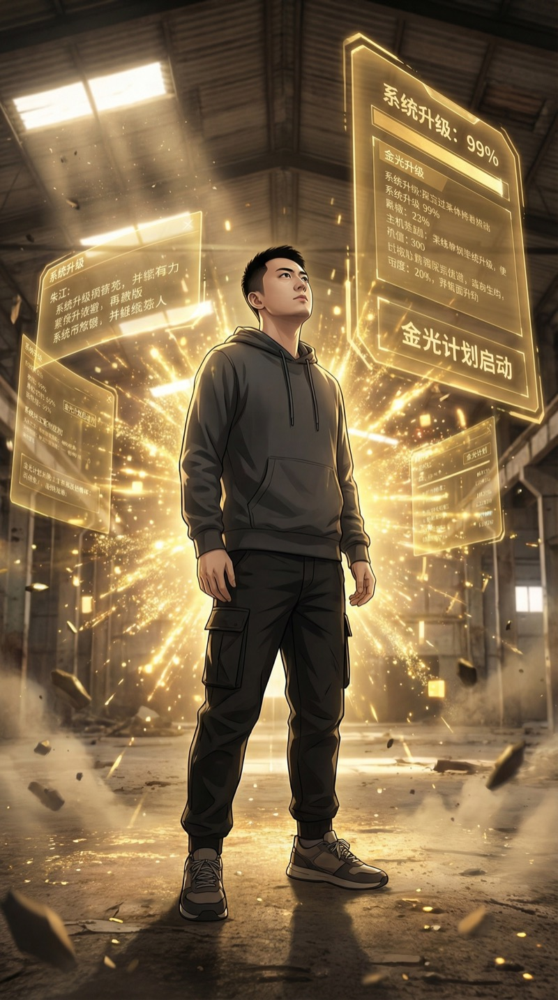
方队派人去了药店——果然找到了药品。半小时后回复：合作细节，面谈。
系统突然全屏震动！金色光芒包围了我的视野。
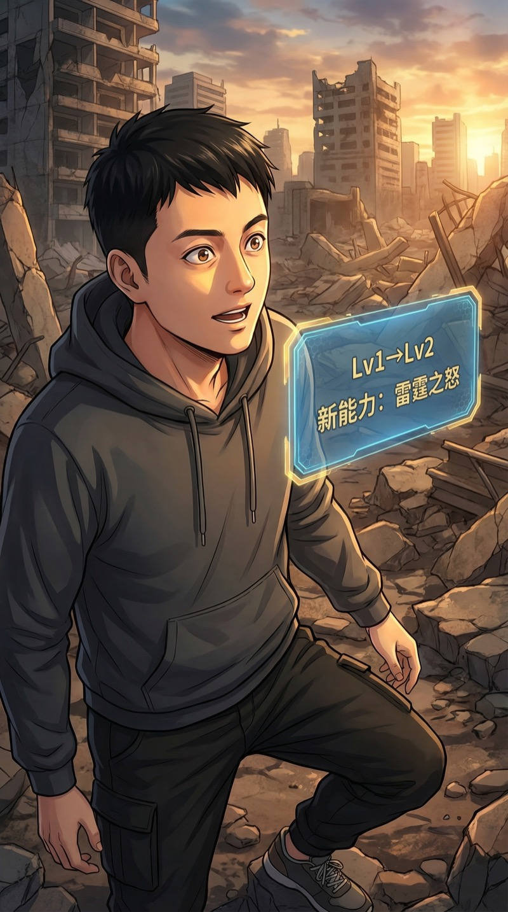
🎉 恭喜！Lv1→Lv2。新能力解锁：【需求预判】——可预判目标人物未来24小时内最迫切的需求。
等等……能预判需求？这不就是用户画像+需求分析？这系统是把产品经理技能树点了个满级啊。
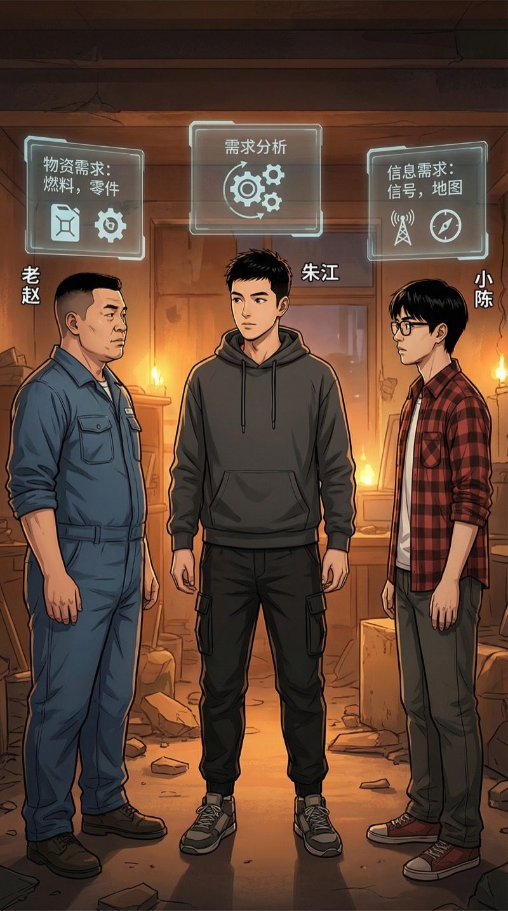
我看向老赵，Lv2能力自动激活。
👤 老赵24h需求：①安全感（对外出恐惧）②一顿热饭 ③「有人罩着」的归属感
看向小陈。
👤 小陈24h需求：①确认「有用」（害怕被抛弃）②技术认可 ③安静的工作环境
原来管理团队最需要的不是画饼，是看到每个人真正想要什么。这个技能……比任何管理课都值钱。
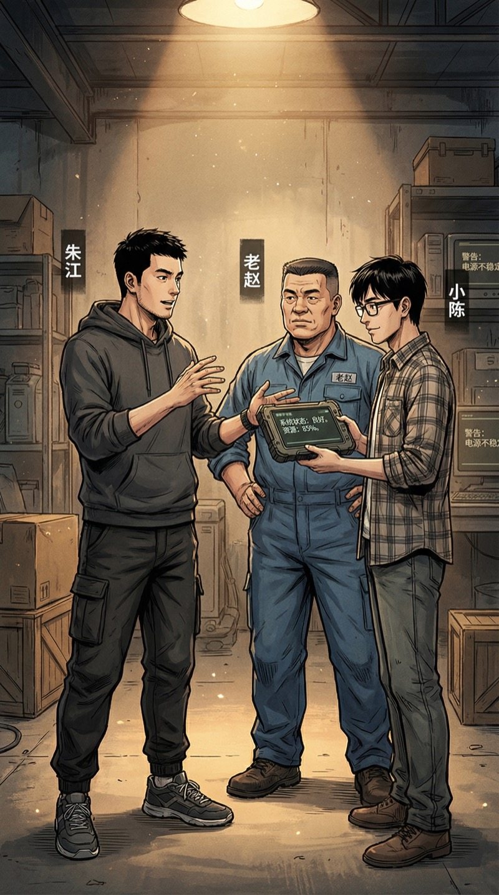
明天中午，我们去中立点面谈。赵哥你跟我去，小陈留守看着局域网。
就咱俩？
带着咱们的「商品」——一台便携信号延伸器。让他亲眼看到我们的技术值多少。
📦 谈判建议：带样品，不带PPT。您终于学会了。
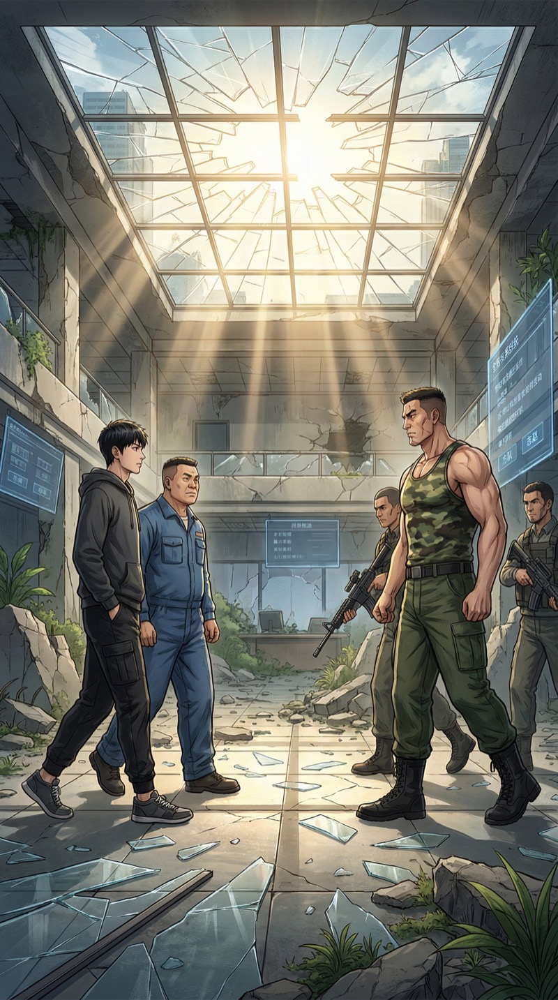
中立点：一栋半毁写字楼的大堂。阳光从破碎玻璃顶倾泻而下。我和老赵从南面进入，方队带着两个手下从北面走来。双方相距20米对视。
末世第一场「商业会议」。没有会议室，没有咖啡，只有碎玻璃反射的阳光。
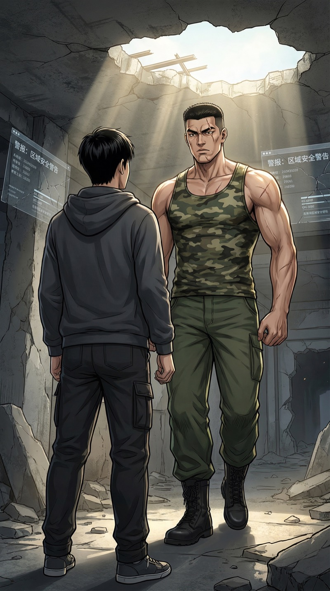
方队走近。真人比视频更有压迫感——比我高一头，伤疤在阳光下格外明显。他打量我三秒。
你就是那个搞通讯的？看着不像技术人员。
因为我不是技术人员。我是CEO。
方队微微挑眉——末世里听到CEO这个词显然很意外。
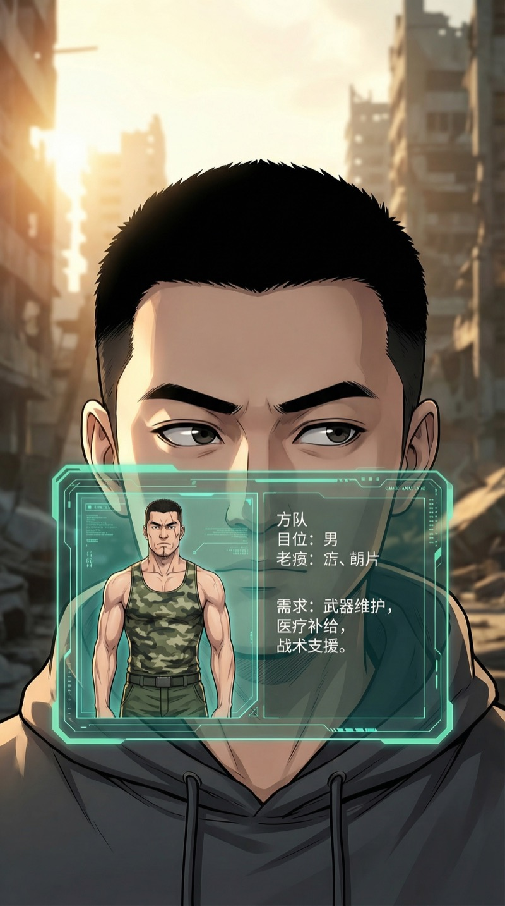
系统自动对方队激活Lv2需求预判。
🎖️ 方卫国24h需求：①稳定的信息网络（迫切）②外交渠道——与其他据点建立非武力联系 ③医疗物资持续来源
他最需要的不是食物——是信息网络和外交渠道。一个军人最缺的是「不用打仗就能解决问题」的能力。这恰好是我最擅长的。
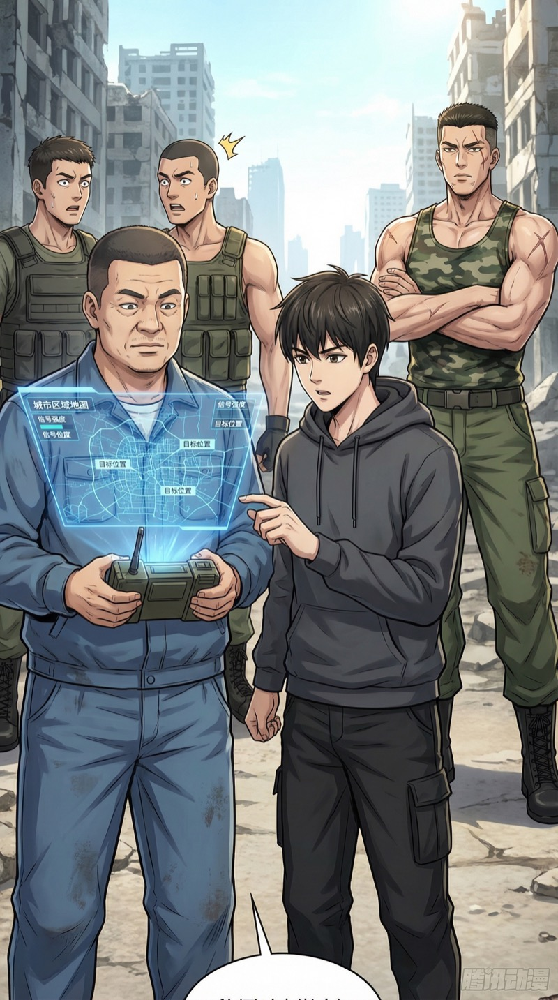
我让老赵拿出信号延伸器，当场演示：接通局域网，秒显方队据点周边2公里地图+物资标注。
方队的两个手下互相看了一眼——眼神从警惕变成了震惊。方队表情没变，但他的手微微攥了一下。
他懂这意味着什么。
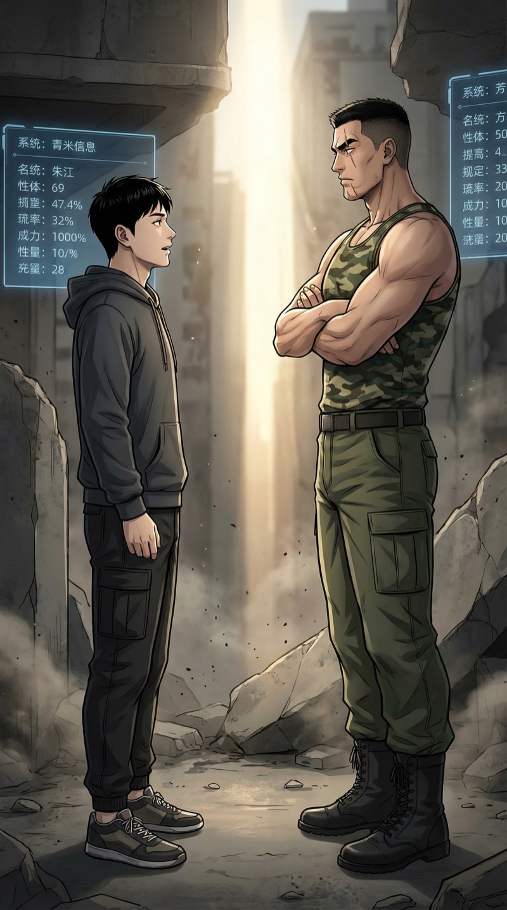
合作条件？
三条。一、情报共享。二、你提供安保护送，我提供物资调度和通讯网络。三、遇到第三方势力，联合决策，不能单独行动。
方队盯着我看了五秒。
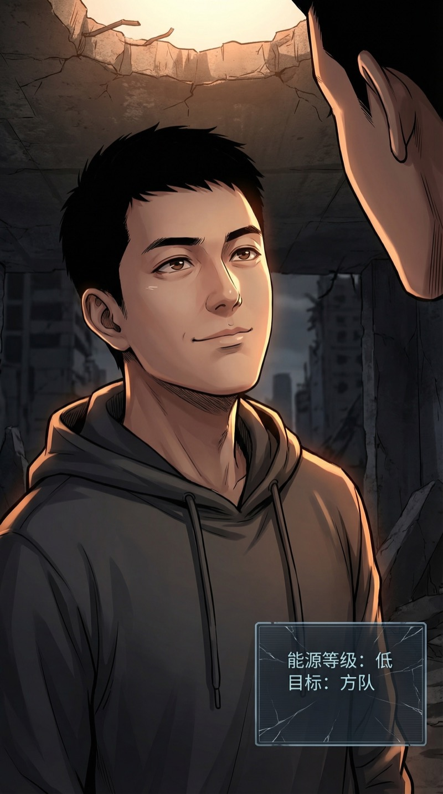
第三条——如果我不同意呢？
那你继续用嗓子喊联络，用腿跑侦查。在信息时代打仗靠通讯——就算末世了，这条规律也没变。
⚔️ 话术攻击力：A。对方心理防线：动摇中。
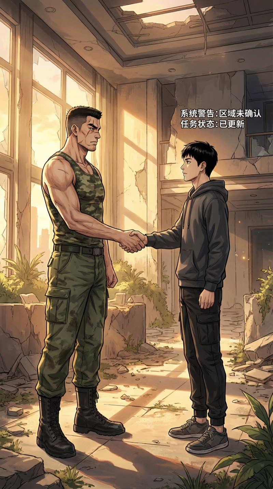
方队沉默。然后做了一件出乎所有人预料的事——他伸出手。
成交。但我加一条：你的人进我的防区，必须提前报备。
合理。我也加一条：你的人用我的通讯网，不能监听我方频道。
两种完全不同的power——武力与信息——达成了平衡。
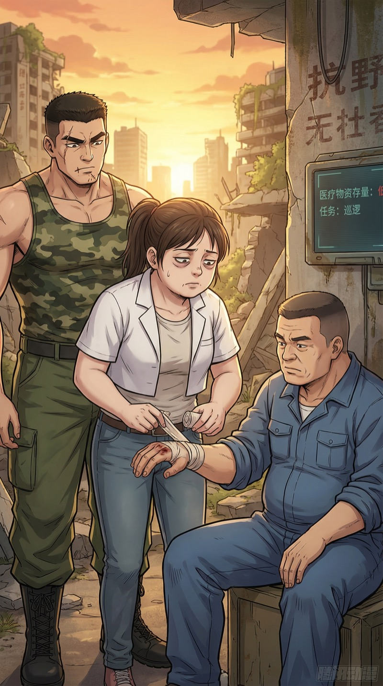
谈判结束。林医生从方队身后走出来。黑眼圈深到像画了烟熏妆，但检查老赵擦伤的手法稳得惊人。
🏥 林晓棠 | 核心技能：急救S级+药理A级 | 当前状态：极度疲劳 | 特殊标注：她是30人活下来的核心原因
又一个被低估的人才。这末世到处都是「低估值资产」。
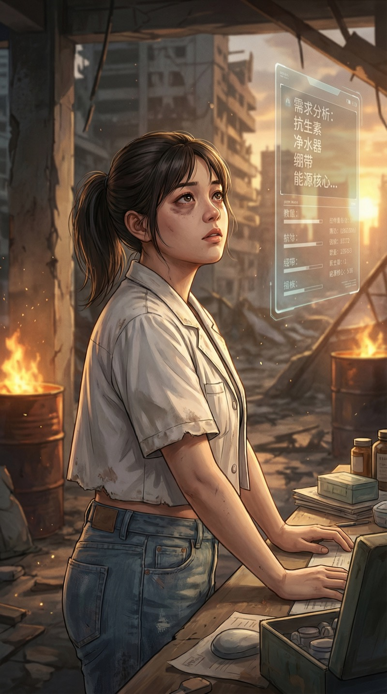
林医生给老赵处理完伤口，抬头看我一眼，没说话。
👤 林晓棠24h需求：①药品补给（急迫）②8小时以上睡眠 ③「有人能帮我分担」的信念
第三条需求……她需要的不是药，是希望。
💡 建议将林医生纳入核心团队规划。ROI极高。
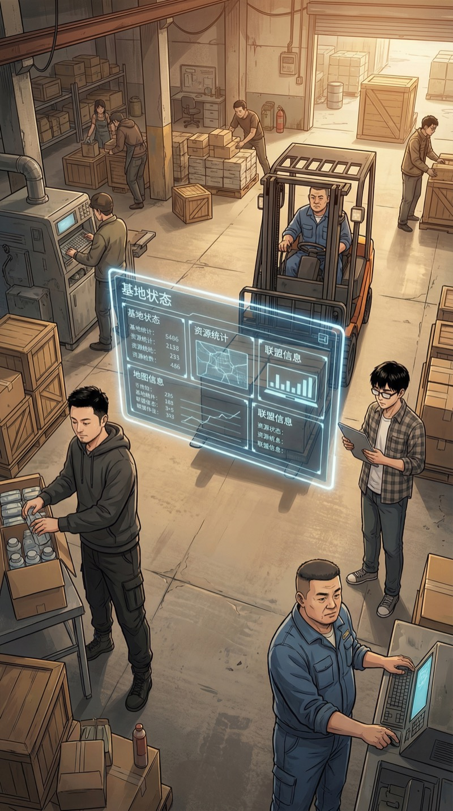
回到分拣中心。小陈趁我们谈判时把局域网扩展到了800米。系统据点面板更新。
🏗️ 据点等级C→B | 联盟人口：33 | 物资：7天 | 通讯：2.3km | 安保：D→B
从3个人到33个人，一下午。某些创业公司融资后扩张也没这么快。
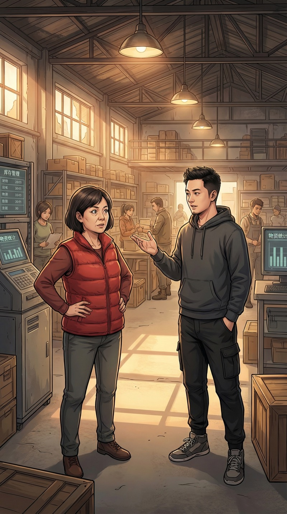
刘姐闻讯赶来，眼珠子转了三圈。
你们跟那帮当兵的搭上了？！
刘姐，现在联盟有安保、有通讯、有医疗——就差一个稳定的物资零售网络。你有兴趣做末世第一家「连锁超市」吗？
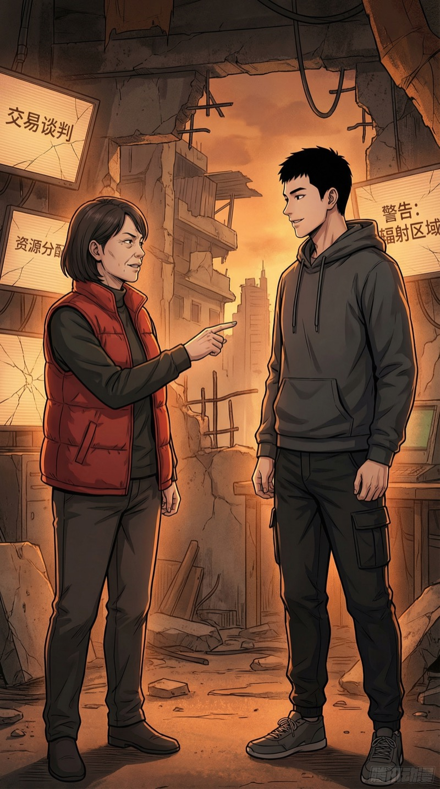
刘姐伸出手指头。
物资定价我说了算。
供需定价，市场决定。我给你独家渠道，你给联盟成员优惠价。
……你这CEO当得真像那么回事。行！
🤝 恭喜完成「供应链合作协议」。经验+15。距Lv3还差25点。
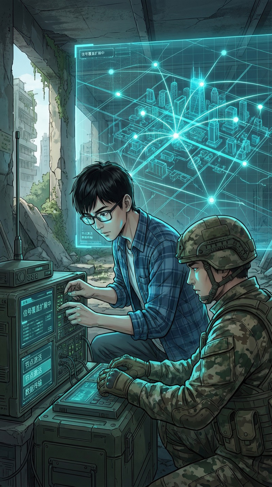
三天后。小陈+方队的通讯兵联手把网络覆盖扩到5公里。地图上亮起了更多信号点。
📡 检测到8个新信号源。建议：逐一建立联系。您正在建造一个——末世互联网。
所有的商业帝国，都从基础设施开始。
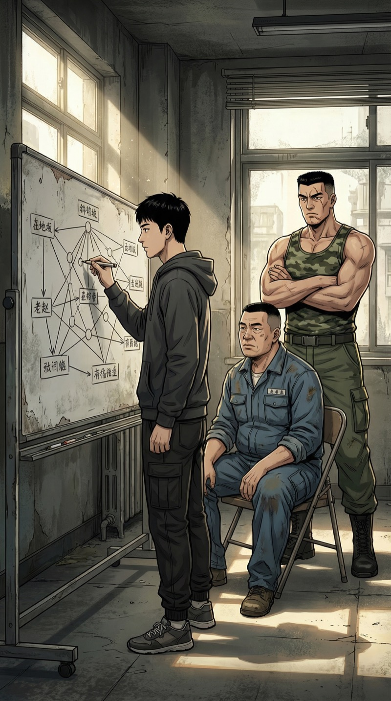
我在破旧的白板上画着据点分布图。像极了当年创业时画商业模式的样子。
你画的这个……像蜘蛛网。
在商业上这叫「平台网络效应」。每多一个节点，整个网络的价值就翻一倍。
说人话。
……就是拉群。人越多群越有用。
明白了。
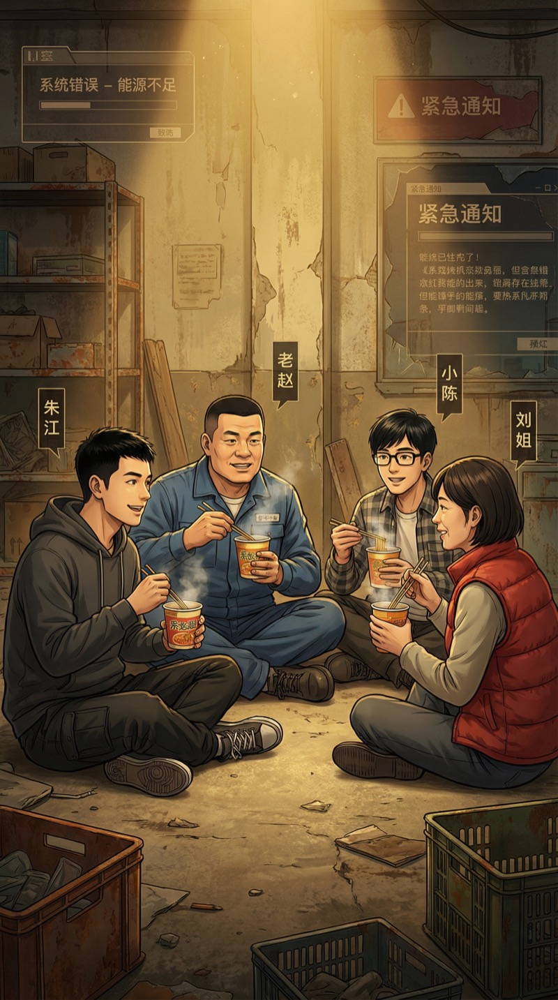
夜晚。分拣中心第一次有了热饭的味道。四个人蹲在地上吃泡面，热气蒸腾。
我活了四十年，没想到末世的泡面最香。
小陈推眼镜，难得笑了。
❤️ 团队士气+20。温馨提示：泡面的投资回报率在末世约为10000%。
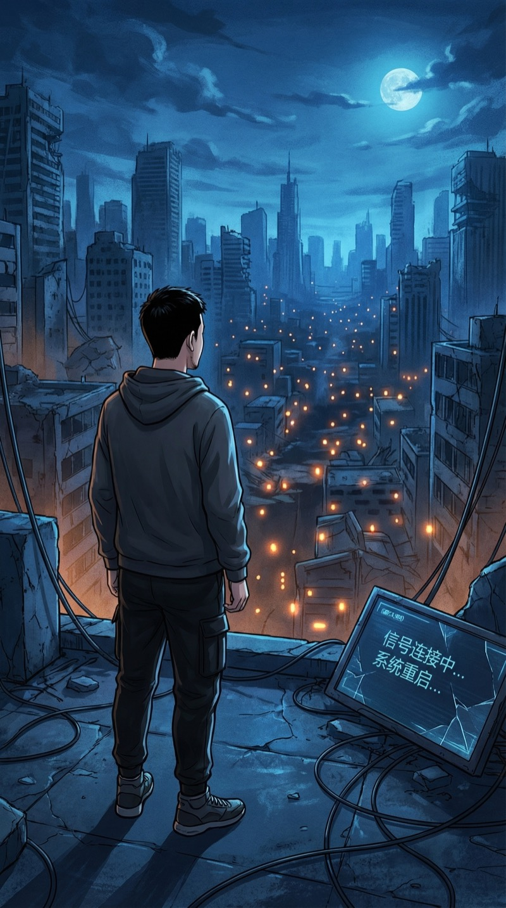
我站在分拣中心屋顶。月光下城市废墟的轮廓像一只沉睡的巨兽。局域网信号灯在黑暗中一闪一闪——像心跳。
大断裂第十天。从一个人，到四个人，到三十三个人。从一间破仓库，到一个联盟网络。在末世做CEO，感觉比在会议室做PPT真实一万倍。
📊 您的商业帝国估值：末世标准下约0.0001%的城市重建贡献值。加油，您离独角兽还差……很远。
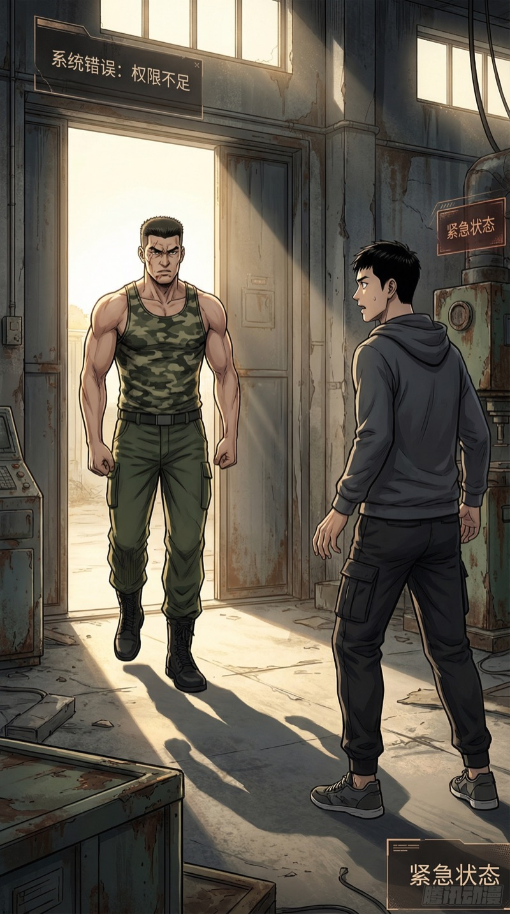
第二天清晨。方队表情凝重地走进来。
朱总，有情况。我的人在东面3公里发现一个被洗劫的据点。所有物资被抢空。地上有——
他停顿了一下。
——伤亡者。
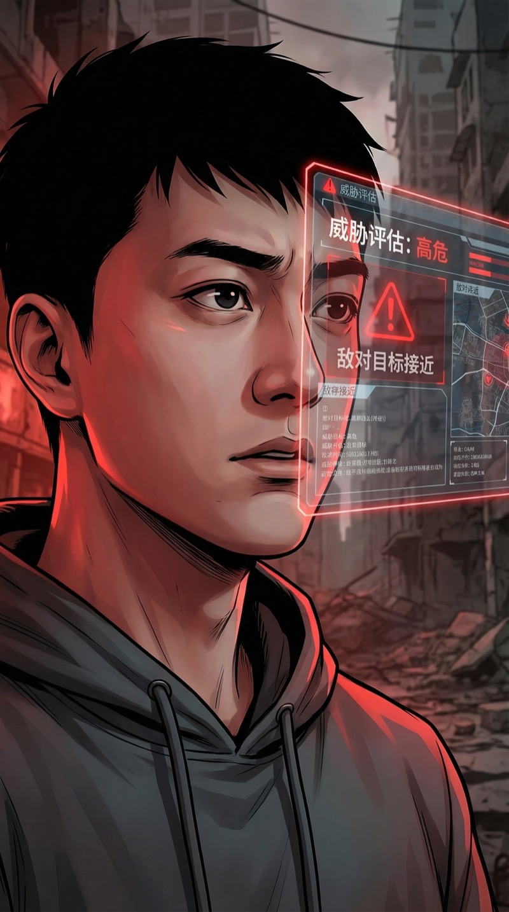
我的表情沉了下来。
🚨 周边威胁评估更新：检测到有组织掠夺行为。模式：专业化，有计划。预估掠夺团伙规模：15-20人。威胁等级：B→A。
末世不只有「做生意」。还有人选择——抢。
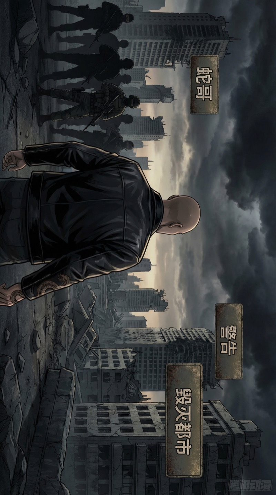
城市东面废墟。一个身影站在被洗劫据点的楼顶，俯瞰着废墟。光头，皮夹克，左臂蛇纹身在晨光中若隐若现。身后站着十几个拿着各种武器的人。
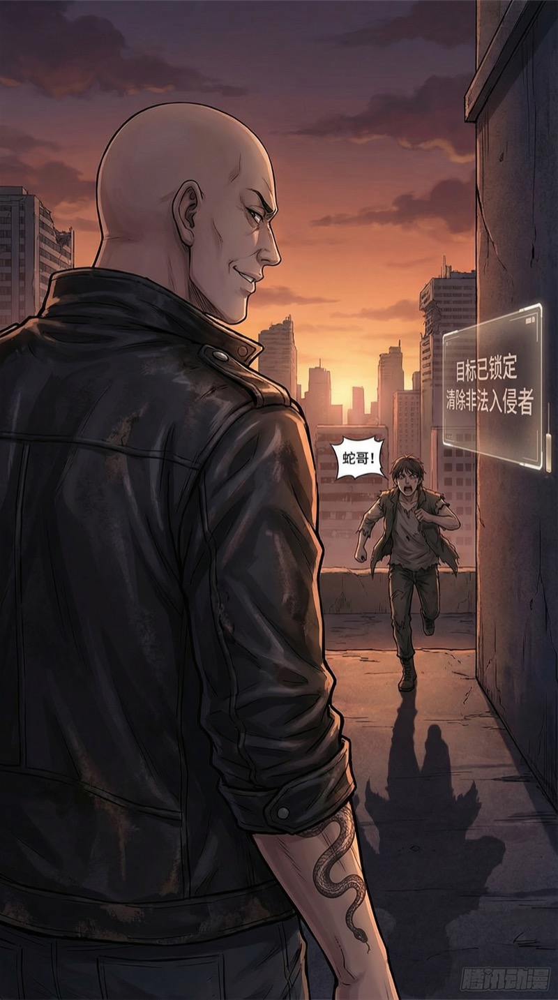
一个手下跑上来汇报。蛇哥没回头，盯着远处——分拣中心的方向。嘴角微微上扬。
那边……最近信号挺多。
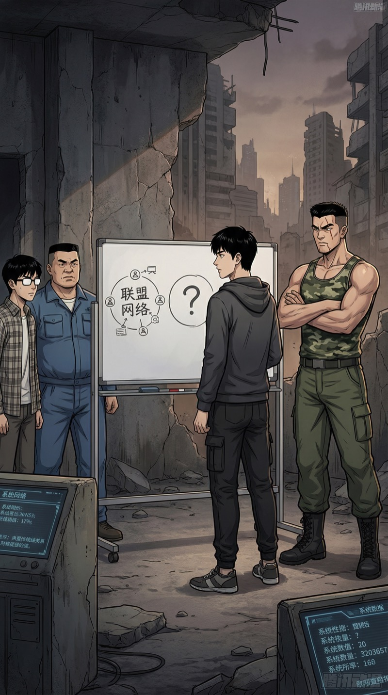
我召集核心团队。白板上画出两个圈——左边是联盟网络，右边打了个大问号。
我们现在有两个选择：等他们来找我们，或者我们先找到他们。我选后者。
方队第一次露出认同的表情。
这个CEO……有点军人思维。
🤝 检测到方队好感度+15。您正在解锁「跨界合作」成就。
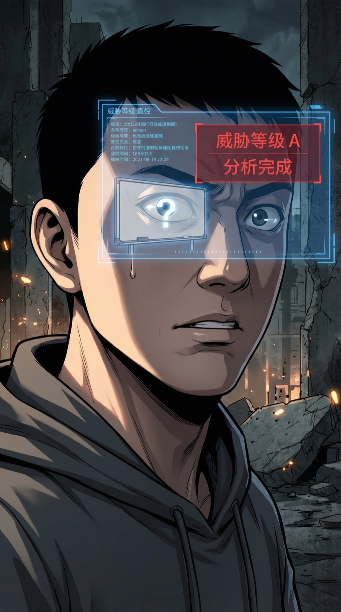
我看着白板上那个大问号。
🔴 未知势力 | 威胁等级：A | 预估实力：武力远超联盟 | 建议：绝对不要正面冲突。
打不过。但打不过不代表赢不了。商场上最精彩的胜利，从来不是靠拳头。
🧠 您的表情像极了连续创业者第三次面对巨头竞争时的样子——很慌，但已经习惯了。